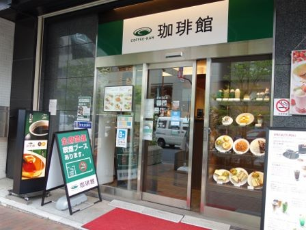
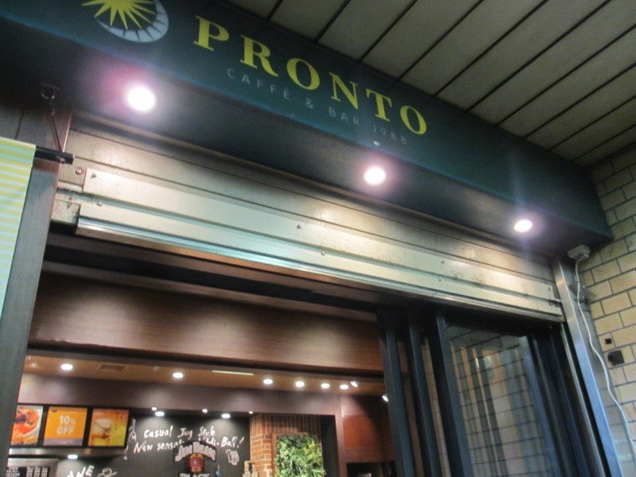
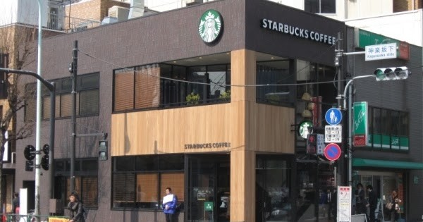
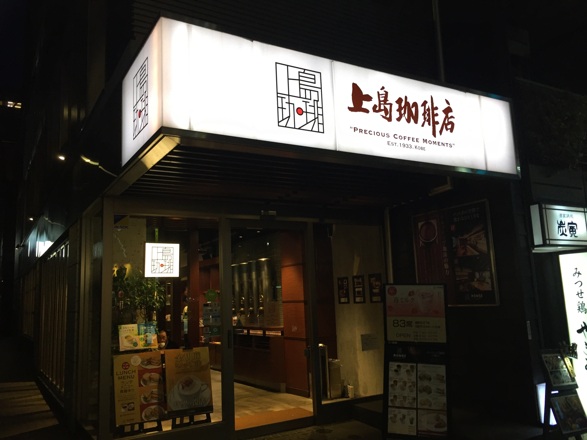

◯CAFE de CRIE渋谷三丁目店 Wi-Fi／電源：12口／禁煙／全席数：50席 営業時間：平日・土(7:00-22:00) 日・祝(7:00-22:00)アクセス：渋谷駅東口から徒歩２分 住所：東京都渋谷区渋谷3-8-12 食べログRetty公式サイト
◯DEAN & DELUCA渋谷ストリーム店 Wi-Fi／電源：12口／禁煙／全席数：81席 営業時間：7:00~22:00アクセス：渋谷駅新南口から徒歩3分 住所：東京都渋谷区渋谷3-21-3 食べログRetty公式サイト
◯STARBUCKS渋谷3丁目店 Wi-Fi／電源：16口／禁煙／全席数：70席 営業時間：平日(7:00-22:00) 土(7:30-22:00) 日・祝(7:30-21:00)アクセス：渋谷駅新南口から徒歩3分 住所：東京都渋谷区渋谷3-11-7 食べログRetty公式サイト
◯STARBUCKS 渋谷マークシティ店 Wi-Fi／電源：10口／禁煙／全席数：66席 営業時間：7:00~23:00アクセス：渋谷駅中央口から徒歩1分 住所：東京都渋谷区道玄坂1-12-1 食べログRetty公式サイト
◯Cafe Miyama 渋谷東口駅前店 Wi-Fi／電源：18口／喫煙席：24席／全席数：61席 営業時間：平日・土(7:30-23:00) 日・祝(9:00-22:00)アクセス：渋谷駅南口から徒歩２分 住所：東京都渋谷区渋谷3-19-1 食べログRetty公式サイト
◯PRONTO渋谷宮下公園店 Wi-Fi／電源：10口／喫煙席：有(分煙)／全席数：64席 営業時間：カフェ営業(7:00-17:30) サカバ営業(17:30-20:30)アクセス：渋谷駅宮益坂口から徒歩５分 住所：東京都渋谷区渋谷1-16-14メトロプラザ 食べログRetty公式サイト
◯珈琲館飯田橋店 Wi-Fi／電源：14口／全席数：60席 営業時間：平日(7:00-23:00) 土日・祝(8:00-22:00)アクセス：飯田橋駅A4出口から徒歩1分 住所：東京都千代田区飯田橋4-8-13 食べログRetty公式サイト 
◯PRONTO飯田橋店 Wi-Fi／電源：3口／喫煙席：有／全席数：89席 営業時間：平日(6:45 ~ 23:30) 土曜日(8:00~22:00) 日祝(9:00~19:00)アクセス：飯田橋駅A4出口から徒歩1分 住所：東京都新宿区揚場町1-11 飯田橋中央ビルB1F 食べログRetty公式サイト 
◯スターバックスコーヒー神楽坂下店 Wi-Fi／電源：21口／禁煙／全席数：61席 営業時間：平日(7:00 ~ 23:00) 土日祝(8:00~22:00)アクセス：飯田橋駅B3出口から徒歩0分 住所：東京都新宿区神楽坂1-9-2 秀永ビル1F・2F 食べログRetty公式サイト 
◯上島珈琲店 神楽坂店 Wi-Fi／電源：10口／全席数：83席 営業時間：平日(7:30-22:00) 土(8:00-22:00) 日・祝(8:00-21:00)アクセス：飯田橋駅A4出口から徒歩1分 住所：東京都新宿区神楽坂3-2 木村屋ビル1F・2F 食べログRetty公式サイト 